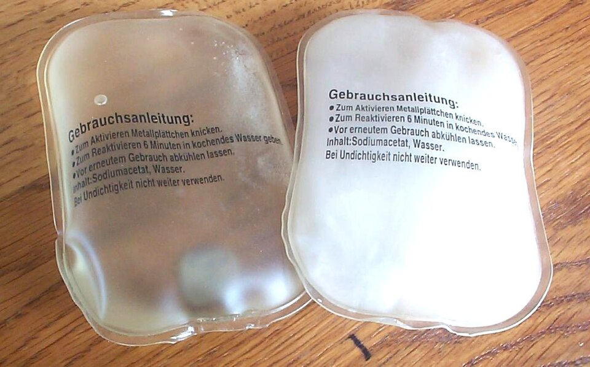
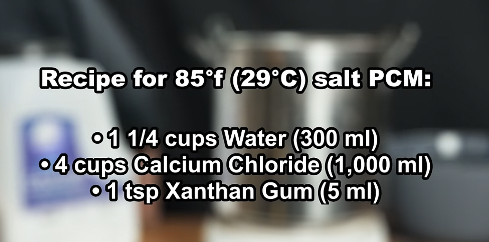
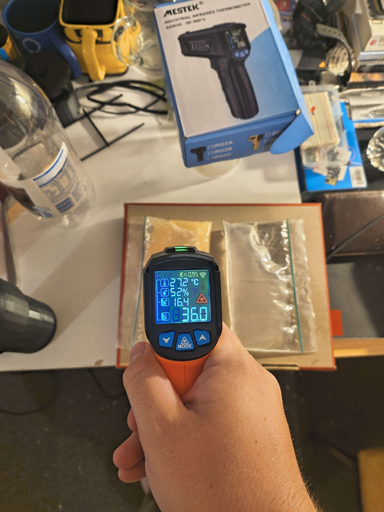
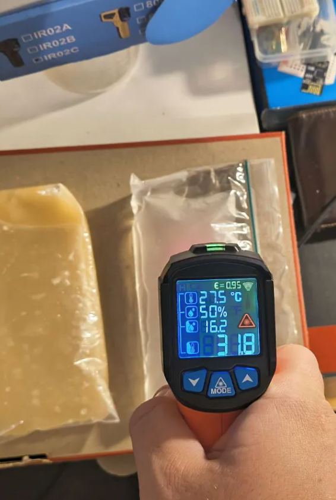
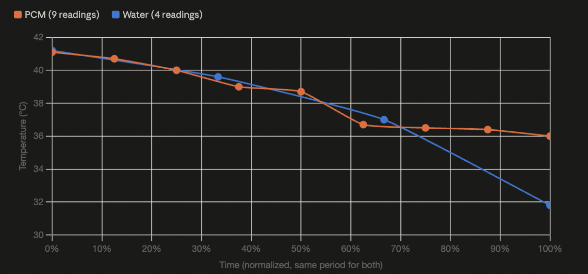
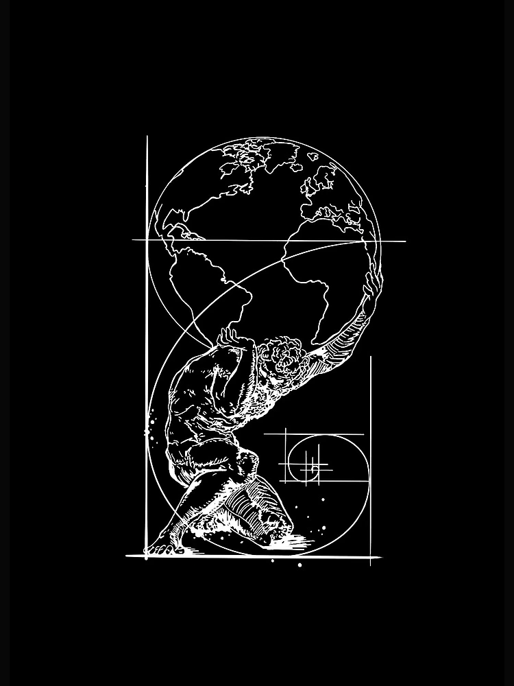
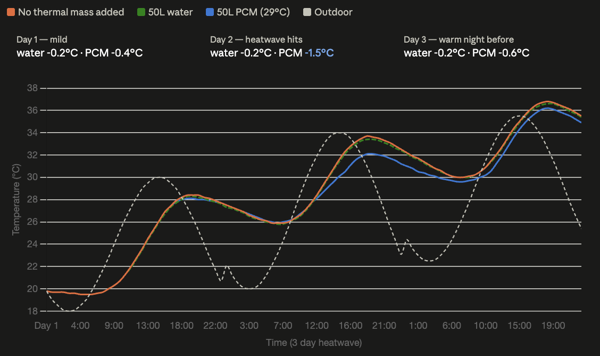

AI Website Generator
sodium acetate hand warmers a classic example of a PCM source: wiki
A phase-change material (PCM) is a substance which releases/absorbs sufficient energy at phase transition to provide useful heat or cooling.
i recommend reading up on latent heat for more information about the general concept
the fundamental concept is different materials will have latent heat changes at different areas in temp and by combining two systems with different latent heats we can help to stabilize a system
if a materials latent heat acts above 30 degrees and we place that into contact with something like water, then even when the air temp is near 31 degrees the difference in energy will be absorbed by the material for aid in it's phase change rather then the water heating up, so this in effect provides a "cooling" effect onto the water without breaking conversation of energy.

fundamental recipe of the CaCl pcm via yt tutorial
For this project i wanted to get some hands on application with pcms, and see if i could make one at home. after a lot of reading i found a great youtube tutorial that discussed the general concepts further and gave some good recipes for pcms
i happened to already have CaCl due to a future project i have mapped out regarding liquid desiccants, and in the video they had one that used that at it's core. so that is the recipe i went with.
The CaCl pcm i will be making has a phase change point around 29 degrees so it will buffer around that area of temp

CaCl PCM after a shared period of time from a initial temp

Water after a shared period of time from a initial temp

generated graph
Graph
The graph clearly shows that over time with the repeated measurements water rapidly approaching the room temp of roughly 27 degrees C
the PCM ended at 36 degrees and the water ended at 31.8 degrees, from a shared starting point of about 41 over the course of 34 minutes
this shows a awesome result that within the same volume and generally similar masses PCMs can help us to store a lot of enegry around a certain temp range. the point of latent heat seemed to be around 37 for my batch of CaCl instead of the 30 degrees the recipe estimated but that is likely due to imperfect measurement on my part.
Note: one important thing to consider is that IR cameras can sometimes be a bit off due to the reflective nature of some materials at different rates then others but as the IR camera read the same base temp at the start of the test from the two materials i am confident in the validity of the results

notebook photo
There is one fundamental catch with pcms systems is that sadly they are not totally passive due to stratification (seperation due to different density) occurring over time for example the CaCl is denser then the water it is suspended in and it will want to fall to the bottom of the system and basically reduce performance. One major way to add this is the xathan gum we add in the recipe that turns the solution into more like a thicker substance like honey, so that the salt falls slower. But i also have another active act that i believe can counter stratification issues.
the idea is to use a "archimedes screw" like system to pump the solution upwards, thereby churning it consistently stopping stratification. this does introduce two more complexities
1. centrifugal force if we are using rotation then what happens if the pcms are pushed outward and get stuck along the "rim" of the barrel. it is for this reason that the output at the top of the screw is at a low radius and the intake of a high radius, allowing us to counteract these effects and keep the solution flowing steady and with performance.
2. power in, it requires power to interact with the system and pump the solution upwards, if i have power why can't i just use ac for the same heat/cooling effect. well the amount of pumping require is actually very small just enough to reduce slow acting effects and some draws somewhere in the low few watts, and that cost in order to store 4.12 kWh of energy is worth it for a ton of real world cases. (this means system wattage could never ever be more then 171.67 watts with a max storage of 4.12 kWh per day, likely more like max 17 watts for real world $ gains over time)

so what would it be like if we could get 50 liters worth of 29 degree PCMs acting using my "churning barrel" approach
here's the sim of how peak temps could be effected
also including the same 50 liter barrel if it was just filled with water for thermal mass instead as a reference point
PCM: 50L CaCl₂·6H₂O, density 1560 kg/m³, latent heat 190 kJ/kg, melt point 29°C → 78 kg, 14,820 kJ (4.12 kWh)
Water: 50L (50 kg), cp 4.186 kJ/kg°C → 209 kJ/°C
Room: 35 m², sensible capacitance 7,560 kJ/°C, UA 90 W/K (basic insulation)
Weather: 3-day heatwave, outdoor peaks 30 / 34 / 35.5°C, overnight lows 18 / 20 / 22.5°C
That's all for now
i hope this provided a sense of interest in the tech and how it could help to make strides in thermal management when you need something more passive than active air conditioning, but less space intense than water cooling every surface in sight.
if i get the capital and have time in the future i would love to make a part 2 to this, where i can design and build the barrel system for real to see how it could really effect a small apartment.
AI Website Generator